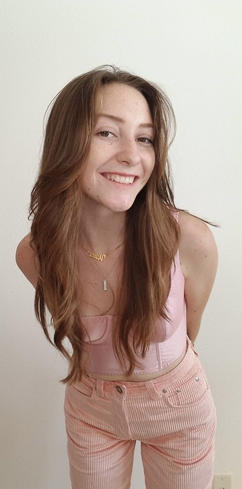

Oh hi! My name is Liberty Vaughan and I’m a design student at the University of San Francisco. I was born in Ojai, California, and raised in an artistic culture.
I enjoy drawing and sketching ideas wherever I go and do welding and physical crafting in my hometown.
I am passionate about product/industrial design with a focus on regenerative design by healing the earth with natural materials and unique mediums. I think strategically about design through its impact on human nature and ecological. My background in graphic design and physical design allows me to visualize products through multiple lenses. I enjoy experimenting with form by expressing objects through light and various colors. I conceptualize ideas that appear in my life with functionality and aesthetics...thinking and acting on new ways to design the objects around us.